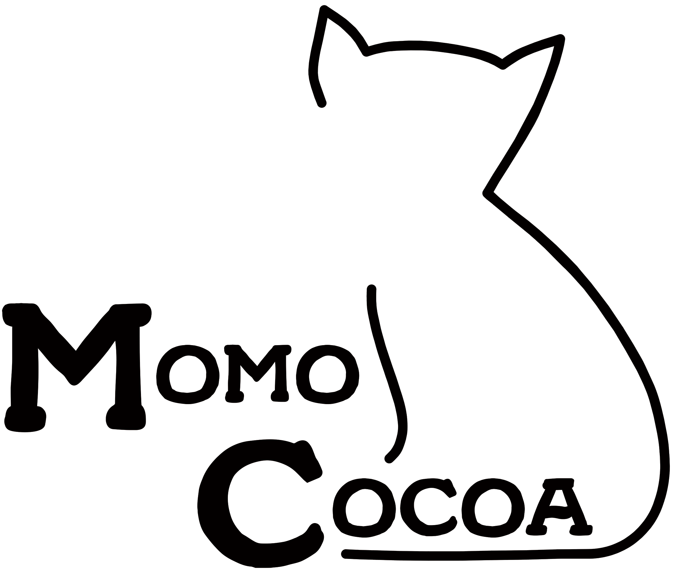

A Portland-based producer of cocoa products
This project has been developed individually. I conducted market research, explored various market segments, interviewed a representative customer, developed a solution based on customer needs, and provided a tactic recommnedation to the client.
What aspects should be considered before launching a new social media campaign?
In this project, I was helping a client, Momo Cocoa, who wants to further expand their business by targeting a new market segment. They proposed the idea of launching a social media campaign, so I needed to provide them with enough information for them to make an informed decision.
about client
Momo Cocoa® is a Portland, Oregon based cocoa company that was founded with one simple purpose: To make high-quality cocoa accessible to all. Most of their products are vegan and all are gluten free and can be enjoyed with non-dairy or dairy milk. Their main product categpries are:
To define the target market segment, I examined IBISWorld Cocoa & Drinking Chocolate Production Industry in the US report and conducted an interview with a representative user of Momo Cocoa products.
What market segment should be targeted in this campaign?
I chose the Health-Conscious target market segment for my recommendation. These customers would buy cocoa mixes because of their health benefits. They will tend to choose products with more health-conscious ingredients, such as low sugar and dark chocolate cocoa, boosting revenue for the client. The Health-Conscious segment is expected to use the product 1-2 weekly and they value brands that focus on high quality ingredients. This segment has the ability to purchase the product due to their higher levels of income, they have a higher CLTV value ($216), and this segment is expected to grow in the future.
Research Methodology
In order to test my research question, I examined the available surveys and papers on the topic of Influencer Marketing effects both in general product categories and in food marketing. The sources that I chose for my research are The rise of social media influencer marketing on lifestyle branding: A case study of Lucie Fink by Glucksman, M; and Endorsement and visual complexity in food advertising on Instagram by Kusumasondjaja, S. and Tjiptono, F.
Discussion
Social media influencers help create a certain image for the promoted brand that allows to build “direct relationships with its key consumers and encourages brand loyalty” (Glucksman, 2017). In the study by Glucksman, social media influencer marketing allowed to “break the wall between the consumer, the brand, and followers through social media content”. When seeing a trusted source use a product, customers feel more confident that they are making a more informed decision about a purchase. In case of food products, Instagram posts promoted by a famous influencer increase customers’ purchase intention and pleasure (Kusumasondjaja, Tjiptono, 2019). However, not all types of posts are found to be equally effective in food advertising. According to Kusumasondjaja and Tjiptono, Instagram posts advertising food that are more visually complex generate more customer response than less complex advertising.